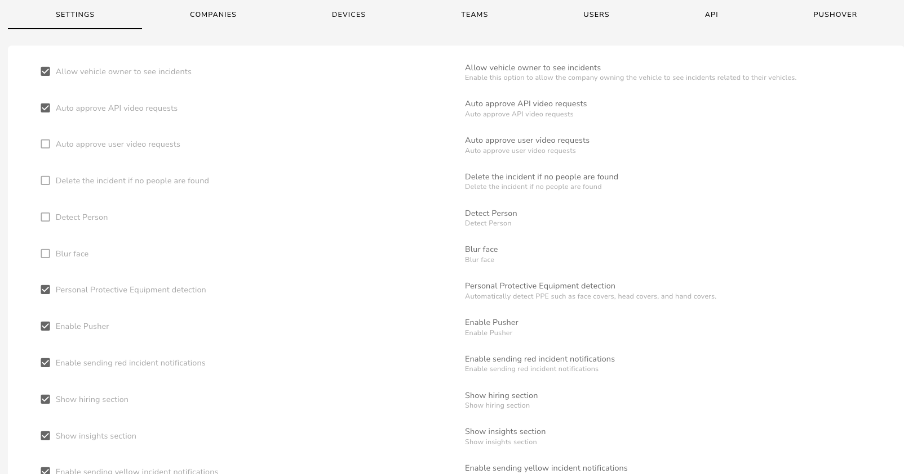
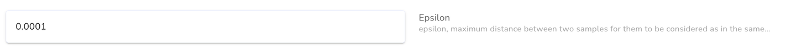
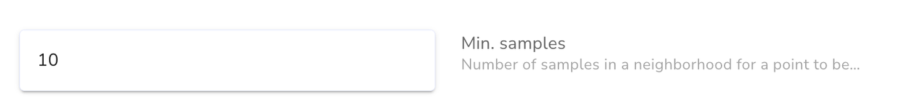
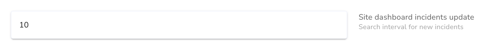

Settings
The Settings tab on the settings page allows the enabling and disabling of settings within the portal.

Below follows a description of each setting available
Not all settings are available to all users.
- Some settings are Super Admin only
- Some settings are Admin only
- Some settings are controlled by the team permissions
Allow vehicle owner to see incidents
Enable this option to allow the company owning the vehicle to see incidents related to their vehicles.
Video
Enable this option to allow incident video requests
Enable API
Enable this option to allow API access
Maximum API Video Requests per Hour
Set the maximum number of video requests allowed per hour through the API.
Allow vehicle owner to see incidents
Enable this option to allow the company owning the vehicle to see incidents related to their vehicles.
Auto approve API video requests
Enable this option to auto approve video requests made through the API
Auto approve user video requests
Enable this option to auto approve video requests made by users
Delete the incident if no people are found
Enable this option to delete the incident if no people are found in the video
Detect Person
Enable this option to detect people within incidents
Blur face
Enable this option to blur faces within incidents
Personal Protective Equipment detection
Enable this option to automatically detect PPE such as face covers, head covers, and hand covers
Enable Live Camera Feed
Enable this option to allow access to the live camera feeds
Show API Section
Enable this option to show the API section
Show Companies Section
Enable this option to show the Companies section
Show Dashboard Section
Enable this option to show the Dashboard section
Show Devices Section
Enable this option to show the Devices section
Show Events Section
Enable this option to show the Events section
Show Fleets Section
Enable this option to show the Fleets section
Show Hiring Section
Enable this option to show the Hiring section
Show Incidents Section
Enable this option to show the Incidents section
Show Insights Section
Enable this option to show the Insights section
Show Reports Section
Enable this option to show the Reports section
Show Settings Section
Enable this option to show the Settings section
Show Sites Section
Enable this option to show the Sites section
Show Teams Section
Enable this option to show the Teams section
Show Users Section
Enable this option to show the Users section
Show Vehicles Section
Enable this option to show the Vehicles section
Epsilon
Maximum distance between two samples for them to be considered as in the same neighborhood

Min Samples
- Minimum number of samples in a neighbourhood for a point to be considered as a core point (this includes the point itself)

Site Dashboard Incidents Update
The number of minutes between screen updates for new incidents

Store Incidents in Owner Database
Enable this option to store incident data in the vehicle owners database, when a vehicle is on hire to another tenant
Incident data is automatically saved to the tenant that is hiring the vehicles, database.